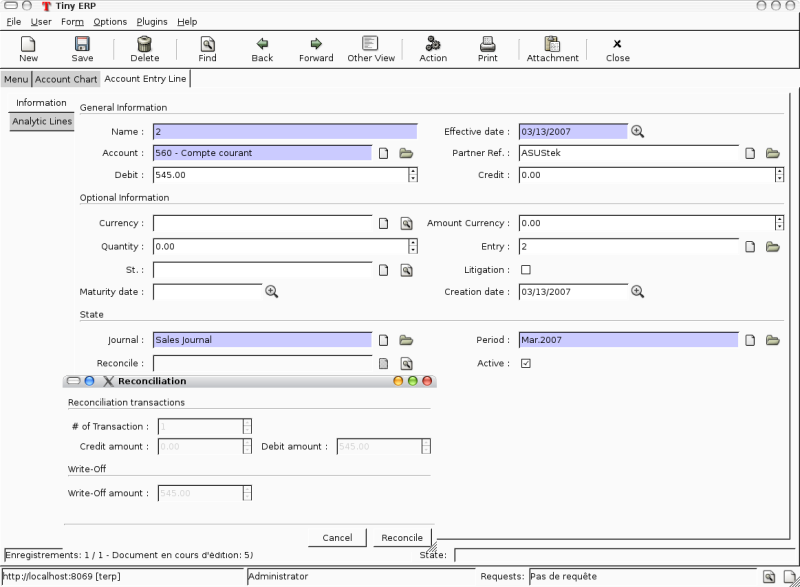

|
 |
Best-selling book on enterprise management |
Enter search terms or a module, class or function name.

Retail and Industrial Management, steps towards Sales, Logistics and Manufacturing Integration in the Open Source & Management Collection. |
Wizards describe interaction sequences between the client and the server.
Here is, as an example, a typical process for a wizard:

Here is a screenshot of the wizard used to reconcile transactions (when you click on the gear icon in an account chart):
A wizard is a succession of steps. A step is composed of several actions;
To define a wizard, you have to create a class inheriting from wizard.interface and instantiate it. Each wizard must have a unique name, which can be chosen arbitrarily except for the fact it has to start with the module name (for example: account.move.line.reconcile). The wizard must define a dictionary named states which defines all its steps.
Here is an example of such a class:
class wiz_reconcile(wizard.interface):
states = {
'init': {
'actions': [_trans_rec_get],
'result': {'type': 'form',
'arch': _transaction_form,
'fields': _transaction_fields,
'state':[('reconcile','Reconcile'),('end','Cancel')]}
},
'reconcile': {
'actions': [_trans_rec_reconcile],
'result': {'type': 'state', 'state':'end'}
}
}
wiz_reconcile('account.move.line.reconcile');
The ‘states’ dictionary define all the states of the wizard. In this example; init and reconcile. There is another state which is named end which is implicit.
A wizard always starts in the init state and ends in the end state.
A state define two things:
Each step/state of a wizard defines a list of actions which are executed when the wizard enters the state. This list can be empty.
The function (actions) must have the following signatures:
def _trans_rec_get(self, uid, data, res_get=False):
Where:
The result
Here are some result examples:
Result: next step
'result': {'type': 'state',
'state':'end'}
Indicate that the wizard has to continue to the next state: ‘end’. If this is the ‘end’ state, the wizard stops.
Result: new dialog for the client
'result': {'type': 'form',
'arch': _form,
'fields': _fields,
'state':[('reconcile','Reconcile'),('end','Cancel')]}
The type=form indicate that this step is a dialog to the client. The dialog is composed of:
The form description (arch) is like in the views objects. Here is an example of form:
_form = """<?xml version="1.0"?>
<form title="Reconciliation">
<separator string="Reconciliation transactions" colspan="4"/>
<field name="trans_nbr"/>
<newline/>
<field name="credit"/>
<field name="debit"/>
<separator string="Write-Off" colspan="4"/>
<field name="writeoff"/>
<newline/>
<field name="writeoff_acc_id" colspan="3"/>
</form>
"""
The fields description is similar to the fields described in the python ORM objects. Example:
_transaction_fields = {
'trans_nbr': {'string':'# of Transaction', 'type':'integer', 'readonly':True},
'credit': {'string':'Credit amount', 'type':'float', 'readonly':True},
'debit': {'string':'Debit amount', 'type':'float', 'readonly':True},
'writeoff': {'string':'Write-Off amount', 'type':'float', 'readonly':True},
'writeoff_acc_id': {'string':'Write-Off account',
'type':'many2one',
'relation':'account.account'
},
}
Each step/state of a wizard can have several buttons. Those are located on the bottom right of the dialog box. The list of buttons for each step of the wizard is declared in the state key of its result dictionary.
For example:
'state':[('end', 'Cancel', 'gtk-cancel'), ('reconcile', 'Reconcile', '', True)]
Here is a screenshot of this form:

Result: call a method to determine which state is next
def _check_refund(self, cr, uid, data, context):
...
return datas['form']['refund_id'] and 'wait_invoice' or 'end'
...
'result': {'type':'choice', 'next_state':_check_refund}
Result: print a report
def _get_invoice_id(self, uid, datas):
...
return {'ids': [...]}
...
'actions': [_get_invoice_id],
'result': {'type':'print',
'report':'account.invoice',
'get_id_from_action': True,
'state':'check_refund'}
Result: client run an action
def _makeInvoices(self, cr, uid, data, context):
...
return {
'domain': "[('id','in', ["+','.join(map(str,newinv))+"])]",
'name': 'Invoices',
'view_type': 'form',
'view_mode': 'tree,form',
'res_model': 'account.invoice',
'view_id': False,
'context': "{'type':'out_refund'}",
'type': 'ir.actions.act_window'
}
...
'result': {'type': 'action',
'action': _makeInvoices,
'state': 'end'}
The result of the function must be an all the fields of an ir.actions.* Here it is an ir.action.act_window, so the client will open an new tab for the objects account.invoice For more information about the fields used click here.
It is recommended to use the result of a read on the ir.actions object like this:
def _account_chart_open_window(self, cr, uid, data, context):
mod_obj = pooler.get_pool(cr.dbname).get('ir.model.data')
act_obj = pooler.get_pool(cr.dbname).get('ir.actions.act_window')
result = mod_obj._get_id(cr, uid, 'account', 'action_account_tree')
id = mod_obj.read(cr, uid, [result], ['res_id'])[0]['res_id']
result = act_obj.read(cr, uid, [id])[0]
result['context'] = str({'fiscalyear': data['form']['fiscalyear']})
return result
...
'result': {'type': 'action',
'action': _account_chart_open_window,
'state':'end'}
_form = '''<?xml version="1.0"?>
<form string="Your String">
<field name="Field 1"/>
<newline/>
<field name="Field 2"/>
</form>'''
Field type: char, integer, boolean, float, date, datetime
_fields = {
'str_field': {'string':'product name', 'type':'char', 'readonly':True},
}
Field type: one2one,many2one,one2many,many2many
_fields = {
'field_id': {'string':'Write-Off account', 'type':'many2one', 'relation':'account.account'}
}
To create a new wizard, you must:
The declaration is needed to map the wizard with a key of the client; when to launch which client. To declare a new wizard, you need to add it to the module_name_wizard.xml file, which contains all the wizard declarations for the module. If that file does not exist, you need to create it first.
Here is an example of the account_wizard.xml file;
<?xml version="1.0"?>
<terp>
<data>
<delete model="ir.actions.wizard" search="[('wiz_name','like','account.')]" />
<wizard string="Reconcile Transactions" model="account.move.line"
name="account.move.line.reconcile" />
<wizard string="Verify Transac steptions" model="account.move.line"
name="account.move.line.check" keyword="tree_but_action" />
<wizard string="Verify Transactions" model="account.move.line"
name="account.move.line.check" />
<wizard string="Print Journal" model="account.account"
name="account.journal" />
<wizard string="Split Invoice" model="account.invoice"
name="account.invoice.split" />
<wizard string="Refund Invoice" model="account.invoice"
name="account.invoice.refund" />
</data>
</terp>
Attributes for the wizard tag:
__terp__.py
If the wizard you created is the first one of its module, you probably had to create the modulename_wizard.xml file yourself. In that case, it should be added to the update_xml field of the __terp__.py file of the module.
Here is, for example, the __terp__.py file for the account module.
{
"name": Open ERP Accounting",
"version": "0.1",
"depends": ["base"],
"init_xml": ["account_workflow.xml", "account_data.xml"],
"update_xml": ["account_view.xml","account_report.xml", "account_wizard.xml"],
}
To develop osv_memory wizard, just create a normal object, But instead of inheriting from osv.osv, Inherit from osv.osv_memory. Methods of “wizard” are in object and if the wizard is complex, You can define workflow on object. osv_memory object is managed in memory instead of storing in postgresql.
That’s all, nothing more than just changing the inherit.
So what makes them looks like ‘old’ wizards?
<field name="target">new</field>
It means the object will open in a new window instead of the current one.
Example : In project.py file.
class config_compute_remaining(osv.osv_memory):
_name='config.compute.remaining'
def _get_remaining(self,cr, uid, ctx):
if 'active_id' in ctx:
return self.pool.get('project.task').browse(cr,uid,ctx['active_id']).remaining_hours
return False
_columns = {
'remaining_hours' : fields.float('Remaining Hours', digits=(16,2),),
}
_defaults = {
'remaining_hours': _get_remaining
}
def compute_hours(self, cr, uid, ids, context=None):
if 'active_id' in context:
remaining_hrs=self.browse(cr,uid,ids)[0].remaining_hours
self.pool.get('project.task').write(cr,uid,context['active_id'],
{'remaining_hours' : remaining_hrs})
return {
'type': 'ir.actions.act_window_close',
}
config_compute_remaining()
Example :
<record id="view_config_compute_remaining" model="ir.ui.view">
<field name="name">Compute Remaining Hours </field>
<field name="model">config.compute.remaining</field>
<field name="type">form</field>
<field name="arch" type="xml">
<form string="Remaining Hours">
<separator colspan="4" string="Change Remaining Hours"/>
<newline/>
<field name="remaining_hours" widget="float_time"/>
<group col="4" colspan="4">
<button icon="gtk-cancel" special="cancel" string="Cancel"/>
<button icon="gtk-ok" name="compute_hours" string="Update" type="object"/>
</group>
</form>
</field>
</record>
Example :
<record id="action_config_compute_remaining" model="ir.actions.act_window">
<field name="name">Compute Remaining Hours</field>
<field name="type">ir.actions.act_window</field>
<field name="res_model">config.compute.remaining</field>
<field name="view_type">form</field>
<field name="view_mode">form</field>
<field name="target">new</field>
</record>
Enter search terms or a module, class or function name.
|
Retail and Industrial Management, steps towards Sales, Logistics and Manufacturing Integration in the Open Source & Management Collection. |